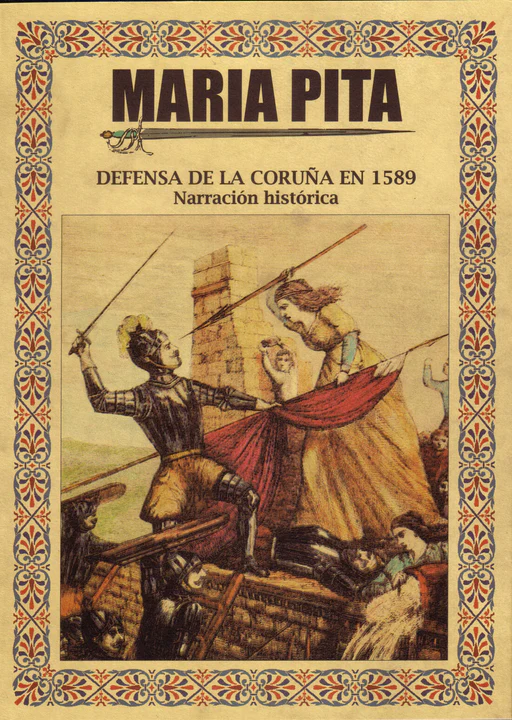

María Pita es recordada como un símbolo de la resistencia gallega y femenina por su papel heroico durante la defensa de A Coruña frente a la Armada Inglesa en el año 1589. En ese momento, una gran flota inglesa comandada por Francis Drake atacó la ciudad como parte de una expedición militar contra España. A pesar de ser una ciudad pequeña y con pocos recursos, los coruñeses decidieron resistir y defender su hogar con valentía. Durante el asedio, María Mayor Fernández de Cámara y Pita, conocida como María Pita, participó activamente en la defensa junto a su esposo, que era soldado. En medio del combate, su marido murió alcanzado por una lanza. Lejos de rendirse, María tomó su arma y, con gran coraje, mató al alférez inglés que había logrado subir a la muralla y levantado la bandera enemiga. Al hacerlo, gritó con fuerza la famosa frase: “¡Quen teña honra, que me siga!” (“¡Quien tenga honor, que me siga!”). Este acto encendió el ánimo de los defensores de A Coruña, que se lanzaron al combate y lograron rechazar el ataque inglés, salvando así la ciudad. Por su heroísmo, el rey Felipe II le concedió una pensión vitalicia en reconocimiento a su valentía y servicio a la Corona. María Pita se convirtió en símbolo de la resistencia gallega, porque su acción representa el espíritu de lucha, orgullo y unidad del pueblo gallego ante la invasión extranjera. También es símbolo de la resistencia femenina, ya que en una época en la que las mujeres tenían un papel muy limitado en la guerra y en la vida pública, María demostró que las mujeres también podían ser protagonistas de la historia, mostrando valor, liderazgo y determinación. Hoy en día, su nombre y su legado están muy presentes en A Coruña: la Plaza de María Pita y una escultura en su honor recuerdan su hazaña, y cada año se celebran actos para conmemorar su valentía. María Pita encarna la fuerza del pueblo gallego y el coraje de las mujeres que luchan por defender lo que aman, convirtiéndose así en un ejemplo histórico de resistencia, dignidad y valor.
